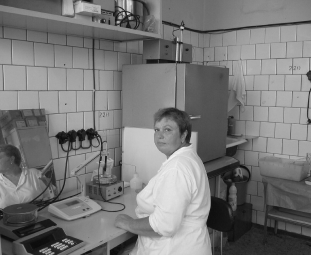
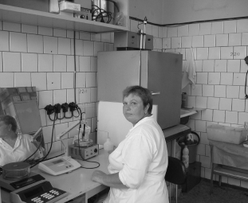

Мы помним, как все начиналось
В нашей истории было много замечательных моментов
Мы помним, как все начиналось
В нашей истории было много замечательных моментов
Из хаоса к порядку: рождение BIOCAD
Из хаоса к порядку: рождение BIOCAD
Сегодня BIOCAD — инновационная биотехнологическая компания полного цикла, признанная во всём мире.

Но ещё 20 лет назад, её не существовало, как и фармацевтической отрасли в нашей стране.
Однако, в смутной России прошлого нашёлся человек, у которого была мечта.
весна 2001
человек и мечта
Дмитрий
Морозов
генеральный директор и основатель BIOCAD
“ Прежде чем основать компанию, я работал в банке и в целом заработать сумел. Многие люди в моем тогдашнем положении просто ушли бы на пенсию. Но мне хотелось изменить мир, а с тёплых островов заниматься этим не совсем удобно. Компанию я начал строить, очень плохо представляя себе специфику фармацевтического бизнеса. “
Дмитрий Морозов:
“ В 90-ые и начале нулевых российская промышленность лежала в руинах. “
Учёные и специалисты продолжали заниматься исследованиями, не расчитывая на помощь тогдашнего государства. Их самоотверженный труд не оплачивался. Одно из таких учреждений — будущая база BIOCAD — Институт иммунологии, расположенный в подмосковном городке Лобучаны. Люди, курировшие работу инстута носили военные звания. И им, и сотрудникам сложно смириться с тем, что помощь приходит из-за рубежа.
Весной 2001 дела в Институте иммунологии шли настолько плохо, что один из корпусов был выставлен на торги.
Ведь, периодически Институт получал гранты от МНТЦ — международной организации, которая занималась утилизацией биологического оружия, но спонсировалась Государственным департаментом США.
Удивительно, что всего за 20 дет до этого, в засекреченном Институте проводили исследования возбудителей чумы и разрабатывали способы защиты от бактеорологического оружия на базе интерферона — белка, который помогает клеткам бороться с вторжениями вирусов, бактериальных веществ и низкомолекулярных химических соединений.
 

8 ноября 2001 года подписано соглашение между Институтом иммунологии и BIOCAD. Филиал института стал называться Центром инженерной иммунологии.
Получив научную базу, мы занялись строительством первого фармацевтического завода с нуля. За два года, у нас получилось преобразовать советский академический подход к науке и подготовиться к запуску первого коммерческого продукта — оригинального лекарственного препарата, защищённого патентом.
С апреля 2002 мы начали разрабатывать Генферон — оригинальный иммуномодулятор на основе интерферона альфа-2b. Действующее вещество препарата — белок, который вырабатывается иммунными клетками и помогает организму бороться с вирусами.
А пока до выпуска Генферона оставалось ещё несколько лет, мы занялись созданием бифидобактерий на базе собственного производства в Петрово-Дальнем.